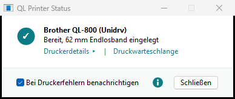
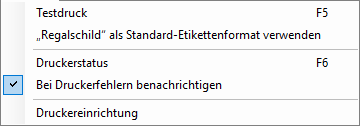

Druckerstatus und Benachrichtigungen
Hält ein Etikettendrucker an, sagt Windows meist nicht, warum. QL Printer Status zeigt es, mit der eingelegten Rolle und dem, was zu tun ist.
-
Das Statusfenster
Klicken Sie in der Leiste auf Druckerstatus, auf die Rolle in der Statusleiste oder im Startmenü auf QL Printer Status. Für jeden QL-Drucker gibt es eine Karte: ob er bereit ist, welche Rolle eingelegt ist, und bei einem Fehler, was zu tun ist. Es gibt nur ein Statusfenster: Ist es schon offen, kommt es nach vorn.

Druckwarteschlange öffnet die Aufträge des Druckers, zum Beispiel um einen hängenden Auftrag abzubrechen.
Druckerdetails zeigt unter der Karte Modell, Anschluss, eingelegte Rolle und Treiberversion; ein zweiter Klick blendet sie wieder aus. Drucker im Netzwerk melden außerdem ihre Zähler (Seiten, Schnitte, gedruckte Länge), Firmware, Speicher und Seriennummer. Drucker an USB oder von einem anderen PC freigegeben haben keine Zähler.
-
Bei Druckerfehlern benachrichtigen
Mit diesem Häkchen im Statusfenster (oder im Menü Drucker) läuft ein kleiner Monitor im Infobereich neben der Uhr. Hält ein QL-Drucker an, erscheint unten rechts eine Windows-Benachrichtigung mit dem Grund und der Lösung, zum Beispiel Abdeckung offen, Rolle leer oder falsche Rolle. Das gilt für alle QL-Drucker und jedes Programm.

Der Monitor startet mit Windows und braucht keine Administratorrechte. Ist er aus, schlägt ein Tipp über der Liste vor, ihn einzuschalten (Benachrichtigungen einschalten, Nicht mehr anzeigen).
-
Falsche Rolle
Passt die Rolle nicht zum Auftrag, blinkt die LED rot, und der Auftrag verschwindet ohne Meldung aus der Warteschlange. Der Drucker antwortet dann nicht mehr, bis die Abdeckung geöffnet und wieder geschlossen wird. So beheben Sie es:
- wartende Aufträge in der Druckwarteschlange abbrechen,
- die Rollenabdeckung öffnen und schließen,
- mit einem Format für die eingelegte Rolle neu drucken.